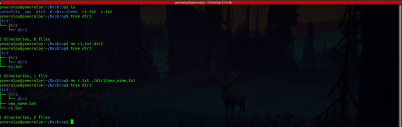
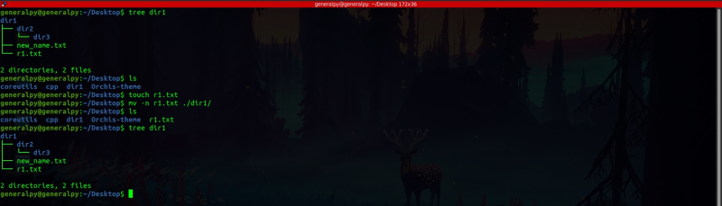
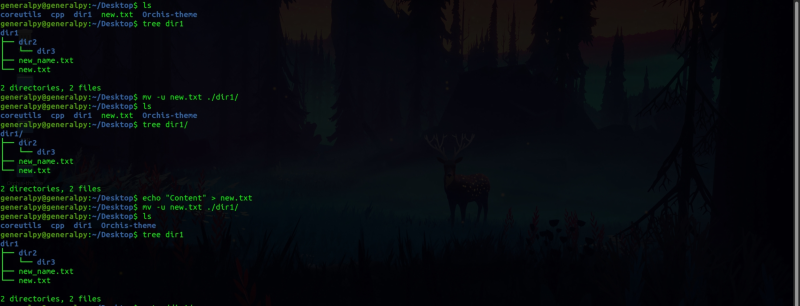
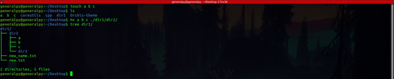
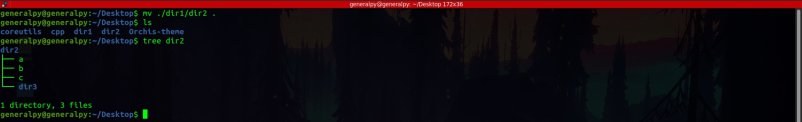
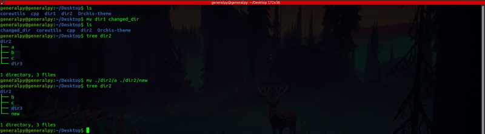
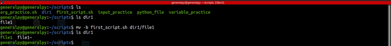

mv command can be used to move and rename files in linux. GUIs also use this command to rename files and folders.
Like cp, mv can also be used with different types of arguments.
Simple files as argument : When simple files are passed as arguments, mv will move file specified in first path to second location changing the name of file if specified else will store with same name.
mv path_to_file new_path or mv source destination

If a file with same name exists in destination, mv will overwrite without prompt. We can use -i to make mv prompt before overwrite.
We can also provide -n flag which will prevent overwriting of files.
We can see that file is not moved to dir1 as it already exists.

We can use -u flag which stands for update to overwrite file only when new version of file is available or file is missing in destination location.

As we can see in image above, file named new.txt was not moved from desktop to dir1 as an updated file(new timestamps also means a new file, file created on 20 june 2021 is newer than file created on 19 june 2021) was already there in dir1(file in dir1 was created after file on desktop) so no file was moved but when we added some new content to new.txt of desktop, file was moved to dir1 and file that was already there was overwritten.
Multiple files and a directory as arguments : When multiple files and a directory is passed as arguments, all files are moved to the directory.
mv file(s) directory

Arguments are all directories : When only directories are passed as arguments , whole directory is moved to destination.
mv source_dir destination_dir
Renaming files/dirs with mv : To rename files or directories using mv we just have to move it to its own location but with changed name.

We can create backup of file when overwritting by using -b. By this if file is present with same name, ~ is added after new file.
